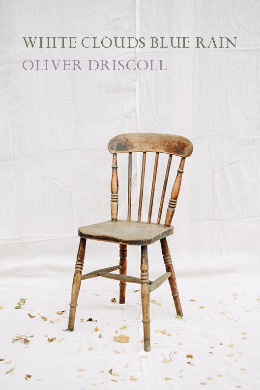
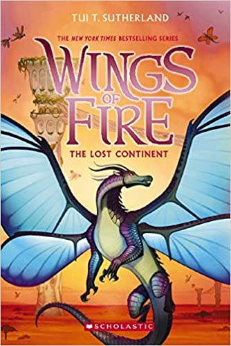
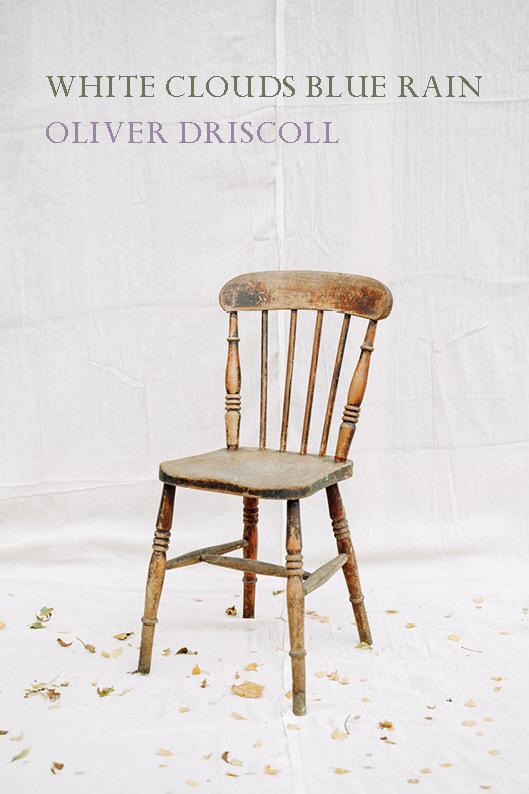
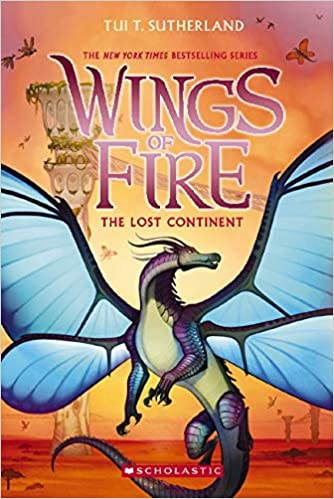
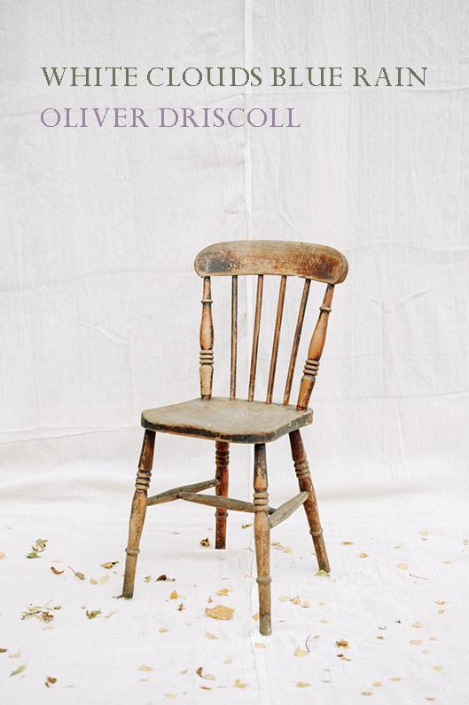
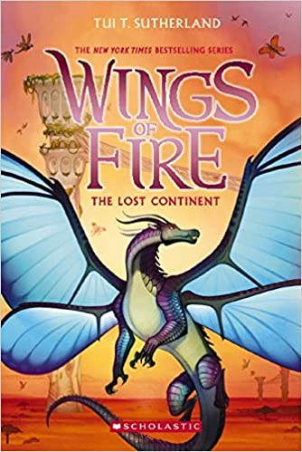
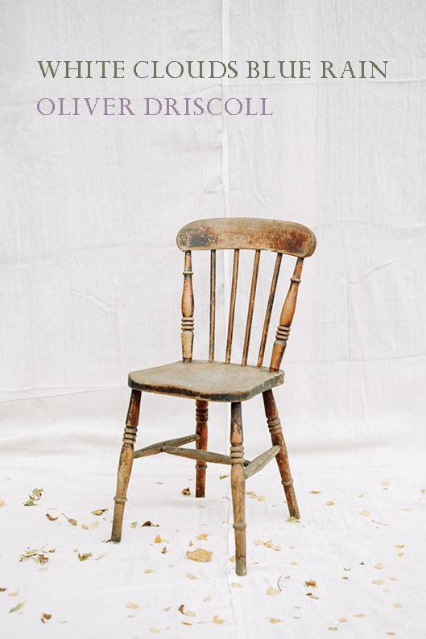
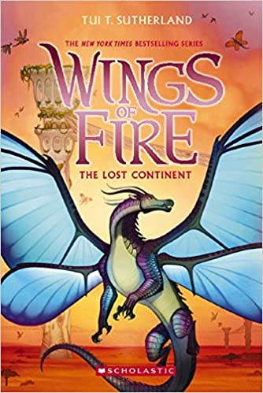
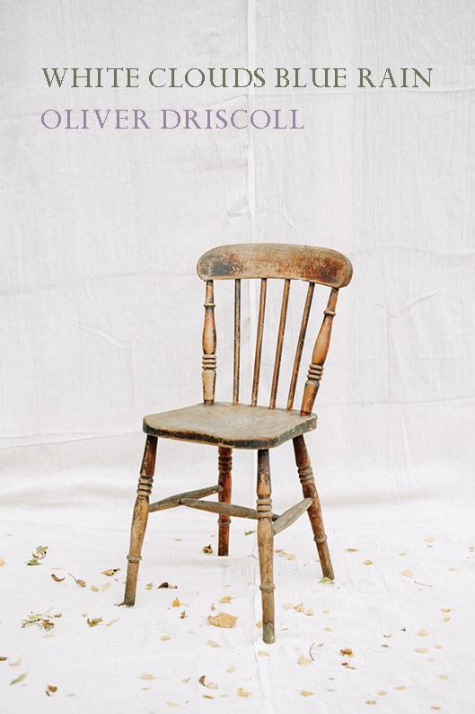
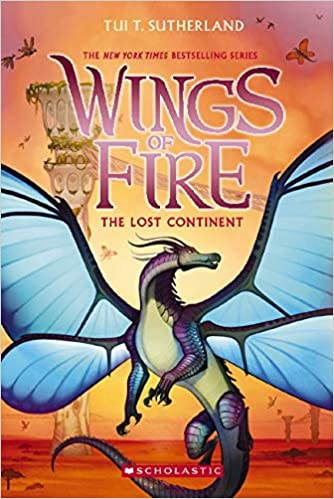

My 2022 Reading Log
Books read so far
The Labyrinth
by Amanda Lohrey
In Moonland
by Miles Allinson
White Cloudes Blue Rain
by Oliver Driscoll
Slouching Towards Bethlehem
by Joan Didion
Wings of Fire #11: The Lost Continent
by Tui T. Sutherland
The Inseparables
by Simone de Beauvoir
 
Currently reading
Checkout 19
by Claire-Louise Bennett
Varieties of Exile
by Mavis Gallant
Wings of Fire # 12: The Hive Queen
by Tui T. Sutherland
Sea Monsters
by Chloe Aridjis
heading 3
heading 4
heading 5
heading 6
H
2
0

 






